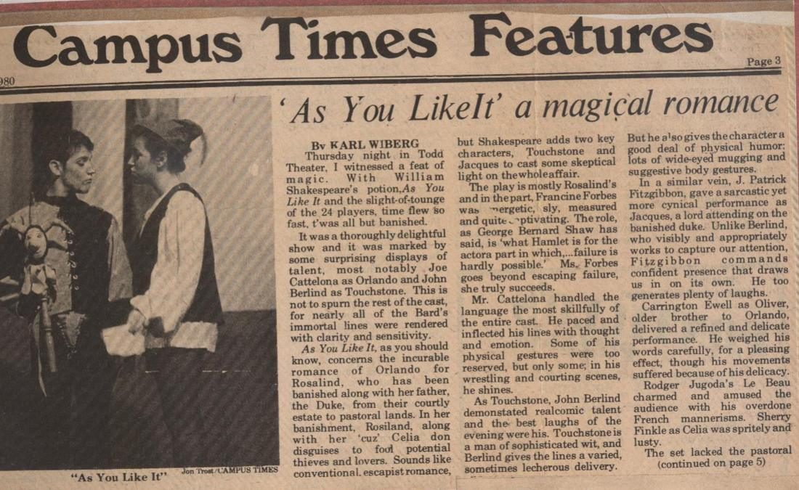
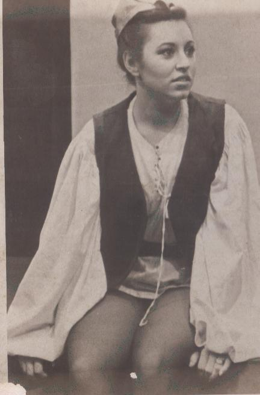
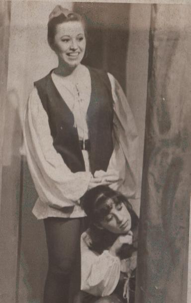

My Mentor College Professor David Richman




Prof. David Richman
When I first got to Los Angeles I had stars in my eyes. Even though I never got the lead in any of the high school plays, I had been given faith, by a man with no sight. My college professor David Richman. Growing up on Long Island I had a bad overbite and was subjected to full silver railroad braces for 8 years (yes, from age 8 to 16). I had an odd crooked nose from a mis-encounter with a baseball bat, my hair was beyond frizzy and I was, thanks to the dawn of fast food and frozen tv dinners, about 40 pounds overweight. By the time I got to college the nose had been fixed, the braces removed, I learned to blow-dry my hair “Marcia Brady” straight but I still battled with the weight. No, actually I battled with the stigma of being an “ugly girl with no talent and a big butt” as one of the kids bullying always resonated in my brain. My self-talent was negative even though I had a burning desire and dream of being on stage as an actress and often I would sabotage myself before I even had the chance to fail the audition. But one day, something changed. Senior year college the production was Shakespeare’s “As You Like It” and the lead role of Rosalind was one of the greatest written. She’s on stage for the better part of 2 1/2 hours, meddling in everyone’s life, pretending to be a boy, falling in love and frolicking through a forest exploring life and making people laugh. A dream role. I auditioned as I always had in high school, just hoping to land the small role of a townsperson or court jester… but lo and behold! when I saw the audition casting sheet… my name was on top for the very first time. What? So I headed to ask Prof. Richman why me, why now – I was graduating to be a lawyer and had dashed those dreams of being a Broadway actress. He sat me down and said, “You have a rare gift of comic timing and insight, the pains you suffered growing up have given you a depth beyond your years, and your voice is deep and full as though you have something to say worth listening to — YOU are my dream Rosalind. Now notice he didn’t comment on the texture of my hair, the bright smile the braces revealed when they finally got removed or even the extra pounds that gave me a “zaftig” outline in jeans… because he never SAW anyone of those superficial features…. Professor David Richman was 100% legally blind and the first man to ever really see me.For his mentorship, rock solid faith and belief in the me I always knew I could be — I owe him. He taught me that success is how you define it, lives deep inside of you and something NO ONE can take away… unless you let them. So don’t let them. My motto to this day, “Dream It, Believe It, Achieve It” it really works 🙂 www.ForbesRiley.com